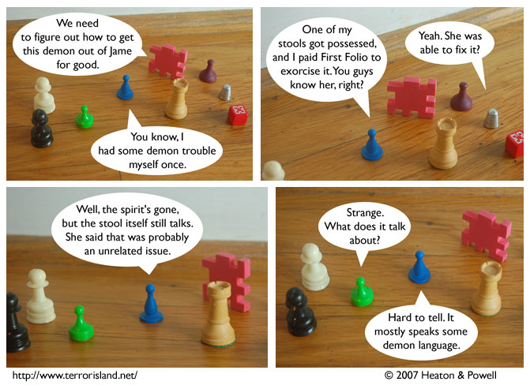

Strip #165
— Monday, July 2, 2007
Notable demonic languages include Esperanto, Perl, and E-Prime.
Notes, Thoughts, &c.
Ben’s Notes
Attentive readers may remember the stool from strip #62. That was also the first appearance of First Folio’s shield.
Lewis’s Notes
A number of people have been asking me who I will be endorsing for the 2008 presidential election. Since I don’t want to keep people in suspense, and I know what sort of impact my stance can have on the outcome of major elections, I figured that I should announce my support officially.
I hereby offer my endorsement of Zombie F.D.R. for President of the United States. For those of you who are curious about his platform, I will share it with you here.
- The New Deal (again)
- BRAINS!